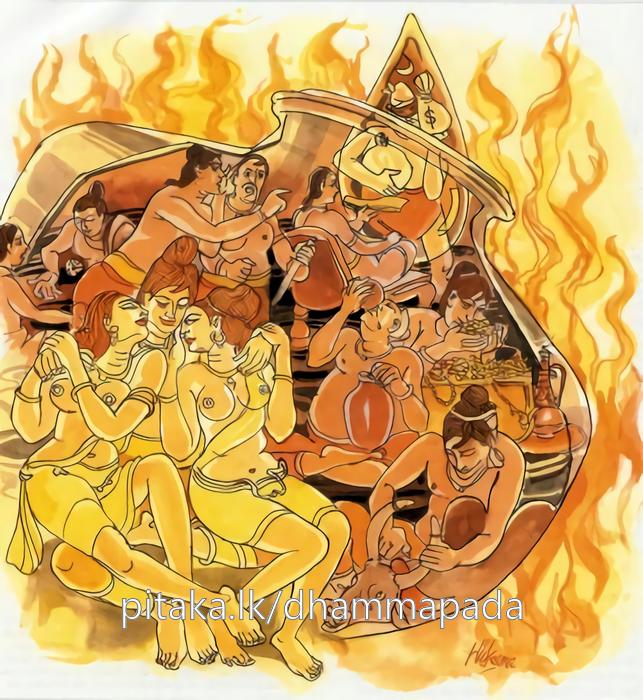

9-5 පස්වන අසංයත ලෙස පිරිකර පරිහරණය කළ භික්ෂුවගේ වස්තුවයි.
මෙම කතාව සද්ධර්ම සාගරයෙන් ද කියවන්න.
මා’පමඤ්ඤෙථ පාපස්ස න මන්තං ආගමිස්සති
උදබින්දුනිපාතෙන උදකුම්භො’පි පූරති
පූරති බාලො පාපස්ස ථොකථොකම්පි ආචිනං.
ඒ ස්වල්පමාත්ර වූ අකුශලකර්මය මා කරා (විපාක දීම් වශයෙන්) නො එන්නේ යැ යි, අකුශල කර්මය ස්වල්ප යැ යි, අවඥා නො කරන්නේ ය. නිතර එකෙකි දිය බිඳක්හුගේ හීමෙන් (වැසී වස්නා අබවසැ විවෘත වූ මුඛ ඇති) කුඹල් බඳුනෙක් යම්සේ ක්රමක්රමයෙන් පිරී යේ ද, එ පරිද්දෙන් ම මඳ මඳ කොට ද පව් රැස් කරන අඥාන තෙමේ පාපකර්මයෙන් (ක්රමයෙන්) පිරෙන්නේ ය.

මාප්පමඤ්ඤෙථ පාපස්ස ආදි මේ ධර්මදේශනාව බුදුරදුන් දෙව්රම වාසයකරන කාලයෙහි අසංයතව පිරිකර පාවිච්චිකරන එක් භික්ෂුවක් නිමිති කරගෙන දේශනා කරනලදි.
ඒ භික්ෂුව ආරාමයෙහි ඇති ඇඳන්පුටු ඇතිරිලි ආදි පිරිකර එළියට ගෙනවුත් ඒවා පරිහරණය කොට එහිම දමා එයි. ඒවා වැස්සට තෙමෙමින් අව්වට වියළෙමින් වේයන් මීයන් ආදීන් විසින් කනු ලබමින් විනාශවෙයි. හෙතෙම, සෙසු භික්ෂූන් විසින්, ඇවැත්නි මේ පිරිකර පරෙස්සම් කළයුතු නොවේදැයි කීකල්හි, ඇවැත්නි මම සුළුදෙයක් පමණක් ගතිමි. ඒවාට සිත්පිත් නැතැයි කියමින් නැවත නැවතත් එසේම කරයි. භික්ෂූහු ඔහුගේ ඒ ක්රියාව බුදුන්ට දැන්වූහ. බුදුරජාණන්වහන්සේ ඒ භික්ෂුව කැඳවා මෙය සැබෑදැයි ඇසූහ. ඔහු බුදුන් එසේ ඇසුවත්, මේ කුඩා වරද ගැන බුදුරදුන් මෙසේ අසන්නේ ඇයි? මේවා සිත්පිත් නැති ද්රව්යයයි කියා අවමානයෙන් ඇසීය.
ඉන්පසු භාග්යවතුන්වහන්සේ, මහණ, භික්ෂූන් විසින් මෙසේ නොකළ යුතුය. පව්කම කුඩායයි ගණන් නොගෙන සිටියයුතු නොවෙයි. ඉඩ ඇති තැනක උඩුකුරුව තැබූ කළය වැසි වසින විට එක බින්දුවකින් නොපිරුණත් නැවත නැවතත් වැසි වසිනවිට පිරෙන්නේමය. මේ ලෙසින් පව්කරන පුද්ගලයා ක්රමයෙන් පව් රැසක් කරගන්නේයයි වදාරා අනුසන්ධි ගළපා දහම්දෙසමින් මේ ගාථාවද වදාළහ:
එය කුඩා වරදකි
පලයක් එයින් නොලැබේ
යනුවෙන් සිතාගෙන
සුළු වරදවුව නොකරනු
බිංදුව බැගින් වැගිරෙන
ජලය කළයක් පුරවයි
එහි මාප්පමඤ්ඤෙථ යනු අවමන් නොකළයුතුය. පාපස්ස යනු පාපයයි. න මන්තං ආගමිස්සති යනු මා කෙළේ කුඩා වරදකි. මෙය පැසවා ගොස් කවදා නම් විපාක දෙන්නේදැයි කියමින් අවමන් නොකළයුතුය යන අර්ථයයි. උදකුම්භොපි යනු වැසි වසිනවිට මුව උඩුකුරුව තැබූ කළය වැනි භාජනයකට එක එක දියබිංදුව බැගින් වැටී ක්රමයෙන් පිරීයයි. මෙසේ මෝඩ පුද්ගලයා ටිකටික කරන පව් රැස්කරමින් වර්ධනය කරමින් පව් රැසක් පුරවා ගන්නේය යන අර්ථයයි.
දේශනා කෙළවර බොහෝ අය සෝවාන්ඵලාදියට පැමිණියාහුය. ශාස්තෘන්වහන්සේත්, අභ්යවකාශයෙහි නිදාගැනීමට එලූ ඇතිරිල්ල මුලින් තිබූ ආකාරයට එය තැන්පත් නොකොළොත් මෙනම් වරදට හසුවන්නේයයි ශික්ෂාපද පැනවූහ.